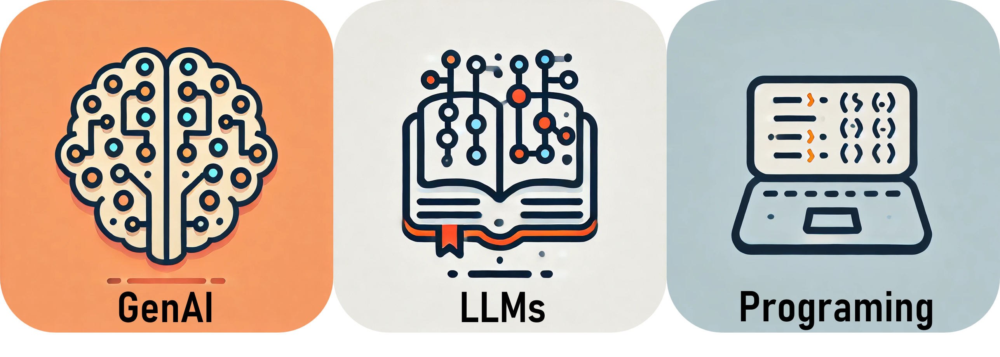
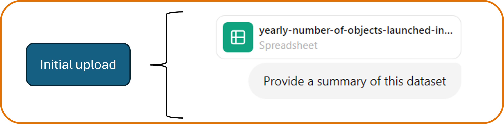
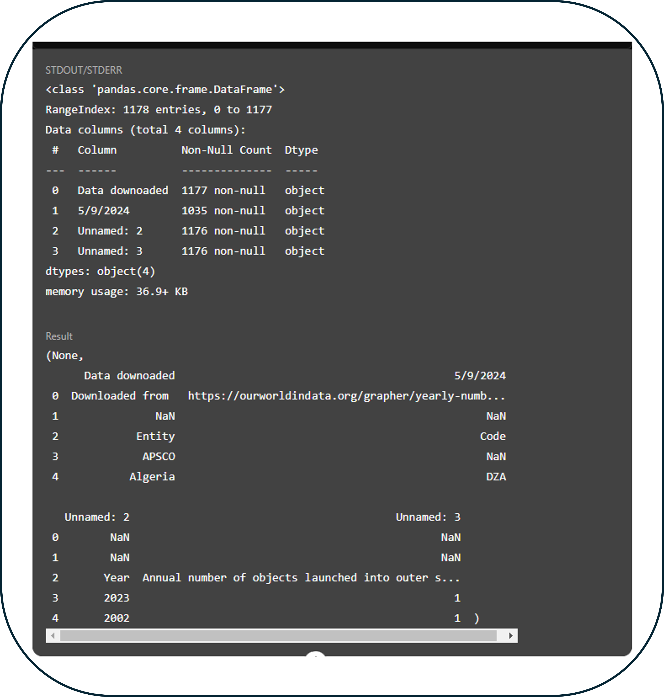
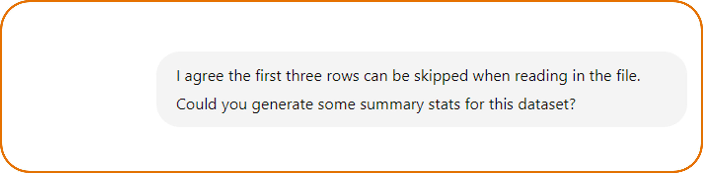
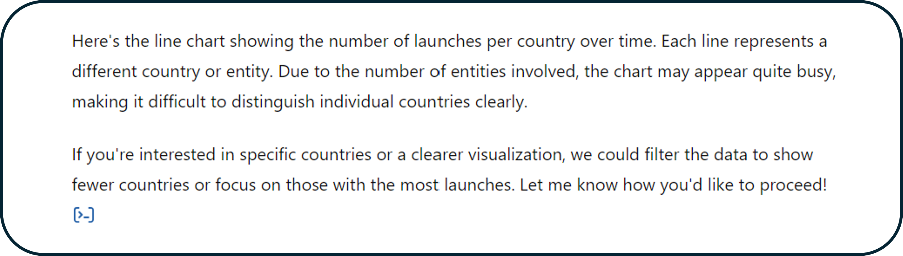
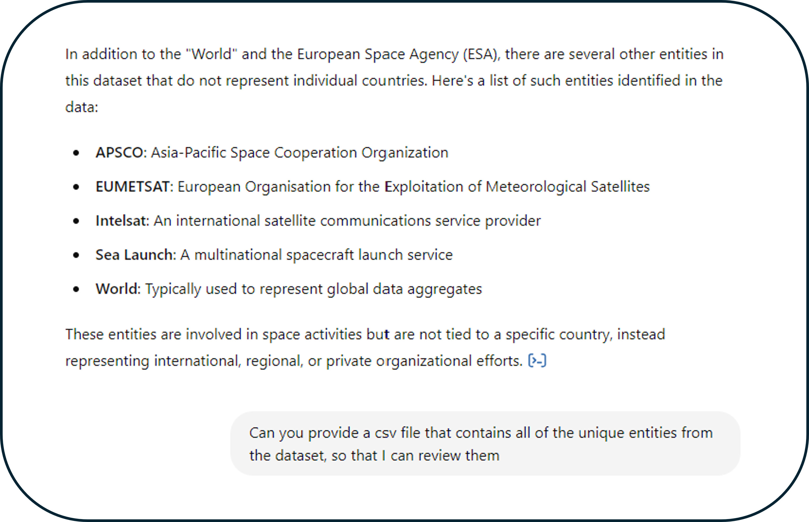
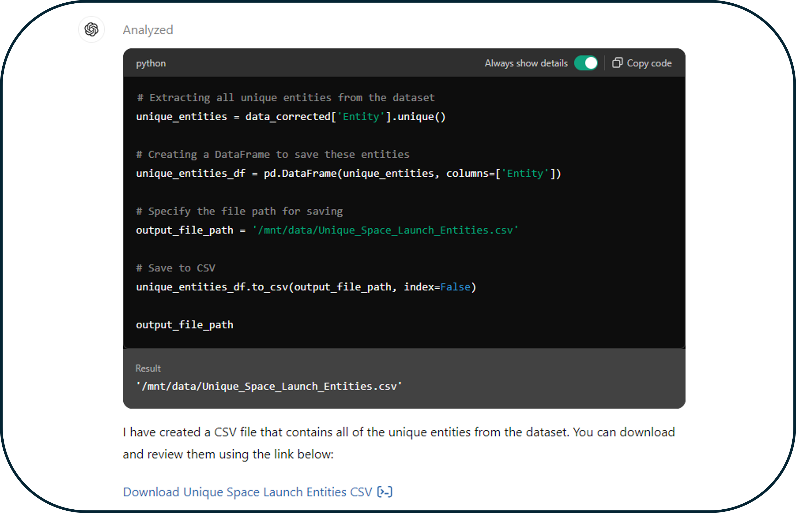

Generative AI & Data Analysis: ChatGPT 4
ChatGPT 4 includes access to an improved model and additional capabilities. Through the Data Analyst GPT you're able to run Python code directly in the web browser which greatly expands ChatGPt's data analysis capabilities.
ChatGPT 4: Data Analyst GPT
Full access to ChatGPT 4 currently requires a paid membership for ChatGPT. It has additional capabilities such as being able to upload external files. Due to security and privacy concerns only publicly available data should be uploaded. ChatGPT 4 also includes access to additional specialized GPTs such as DALL-E and Data Analyst. The Data Analyst GPT is capable of writing and running Python code in the browser, so you don’t have to copy code and run it locally. It can be used to help with all stages of your data analysis including:
Although this can all be very helpful, it is important to remember that you must verify the results . In this tutorial, we'll focus on how to use the Data Analyst GPT, including how to view the code produced by ChatGPT to verify its results.

Tutorial: Data Cleaning and Exploration
Scenario: You have been given a dataset on the annual number of object launched into space by different countries. You have been asked to do some exploratory data analysis and generate some initial plots. You have decided to use the Data Analyst GPT to help with this.
First, we need to make sure that either GPT-4 or GPT-4o is selected. You can verify this by seeing which model is listed by the model selector in your ChatGPT session. Then, to begin using the Data Analyst GPT, we must upload our data file. We can do this by dragging and dropping our file or by clicking the paper clip on the left side of the prompt box and then navigating to the file we want to upload. Recently, the ability to connect to cloud storage services like Google Drive or OneDrive has also been added. However, due to privacy concerns, we currently only recommend uploading publicly available data.

Once you have attached the file, you can either upload it without a text prompt or provide additional information. I like to start by asking ChatGPT 4 to provide a summary of the dataset. ChatGPT 4 will use Python to read the file and provide some summary information. While the Python script is running, ChatGPT 4 will display, “analyzing”.
Initial Upload
ChatGPT 4 Response

Before examining the response from GPT 4 in detail, let's look at how we can view the code it ran to generate its response. You will need to click the View Analysis link to open the code window with the Python script.

This will open the Analysis window with the Python script and its output. The first half of the Analysis window will contain the the Python script and the second half will contain the output of the code, allowing you to confirm any outputs for yourself. This could also help you learn new code as well!
Code Block

Code Output
At the top of the Analysis window, there is an option to Always show details which will make the Python code display in the main ChatGPT session every time. Checking this option will help you to verify what the Data Analyst GTP is doing, so it is recommended. You can also specify this in your settings.

Now that we've selected Always show details, the Analysis window will automatically be incorporated into the main chat session. I started a new chat session, so that the rest of the tutorial will include the Analysis window by default.
In the response from ChatGPT, it mentions that the column names are not properly labeled and that there are some missing values as well. Instead of just accepting that ChatGPT understood the dataset correctly, let's ask follow up questions to confirm this. I will ask ChatGPT for additional details on why it thinks the data was labeled incorrectly and ask for a print out of the first five rows.
Follow-up Question
ChatGPT 4 Response

ChatGPT4 Code

ChatGPT 4 interpreted the first three rows of the dataset as metadata. After reviewing the output for myself, I agree that the first few rows which include the download date and link are metadata and can be ignored when analyzing the data.
Now let's ask ChatGPT to provide summary statistics on our dataset, so that we can gain a better understanding of it.
Summary Statistics
ChatGPT 4 Response

These summary statistics can help us have a better general understanding of our dataset. We now know that the dataset spans 1957-2023 and that on average 29.4 objects were launched into space each year. It also provides more detailed information on the quantiles.
Another nice way to familiarize yourself with a dataset is to plot it. Let's ask ChatGPT 4 to create a line chart of the number of launches per country over time.
Requesting a Plot
ChatGPT 4 Response
ChatGPT 4 said the chart appears quite busy because of the number of countries displayed and I agree. Let's refine the plot to only include the top ten countries with the most objects launched into space.
Refining Plot

That leads to a much more manageable plot, but if we examine the top 10, we’ll see that the World and the European Space Agency are also being included with the individual countries. Let’s remove the European Space Agency but keep the World. We’ll highlight the World line to make it clear that it represents a total. I'll also ask for a label for just the World line.
Refining plot
We can confirm that the European Space Agency has been removed from the plot and that the Word line is black and dashed to help call attention to it. However, a label specific to the world line was not added. Remember that using LLMs often requires an iterative process with multiple refinement steps to get the best results. I will again ask for a label for the World line, but this time I will be more specific and tell ChatGPT 4 that the label should be within the plot area.
Refining plot
The label was correctly added this time! Although there are some additional refinements we could make to this plot, this is not a bad starting place for learning more about our data. This exercise also made us think critically about how to hand non-country entities in our dataset.
As a final step, let's ask ChatGPT 4 to provide a download of the final Python script produced in this session. This way we can save the file and make our analysis more reproducible.
Requesting Python Script
ChatGPT 4 Response

Handling non-country entities in our dataset
In this tutorial, we focussed on learning how to use the Data Analyst GPT for data exploration and visualization, so I did not focus on removing all of the non-country entities from the dataset. Instead, I chose to just remove the European Space Agency from the plot. However if we were conducting a full analysis on this data, we would need to decide on how to handle countries and these larger entities. Let's try to use ChatGPT to identify non-country entities in our dataset.
I'll start by pointing out that the World and European Space Agency are not individual countries to ChatGPT and ask if there are any other additional non-country entities.
Non-country Entities
ChatGPT 4 Response
ChatGPT 4 Code

In the response from ChatGPT, it includes several other organizations such as APSCO and EUMETSAT, so at first glance it appears to have identified the non-country entities. However if we examine the code it used to find those organizations, we'll see that it started by generating its own list of "common non-country labels". Taking that into account, I'm not sure I can trust that ChatGPT found all of the non-country entities. To verify this, I will ask ChatGPT to provide a csv file of all the unique values in the Entity column, so that I can review them for myself.
Non-country Entities
ChatGPT 4 Response
In the list of unique entities, there are several other organizations like the European Union, NATO, and RASCOM that were missed by ChatGPT. It's important to remember that not all tasks should be delegated to ChatGPT, particularly if it is a decision making task.
To solve the problem of having both countries and organization in our dataset, we could use ChatGPT to provide a list of unique values that we classify ourselves. Then we could tell ChatGPT which ones to remove. We could also be more specific with out request to ChatGPT and tell it to first generate a list of all countries in the world and then remove entities that were not on that list. Of course, we would still want to verify the results.
Key takeaways
ChatGPT and other GenAI models can be helpful in your data analysis, but there are certain things you must remember when using it: